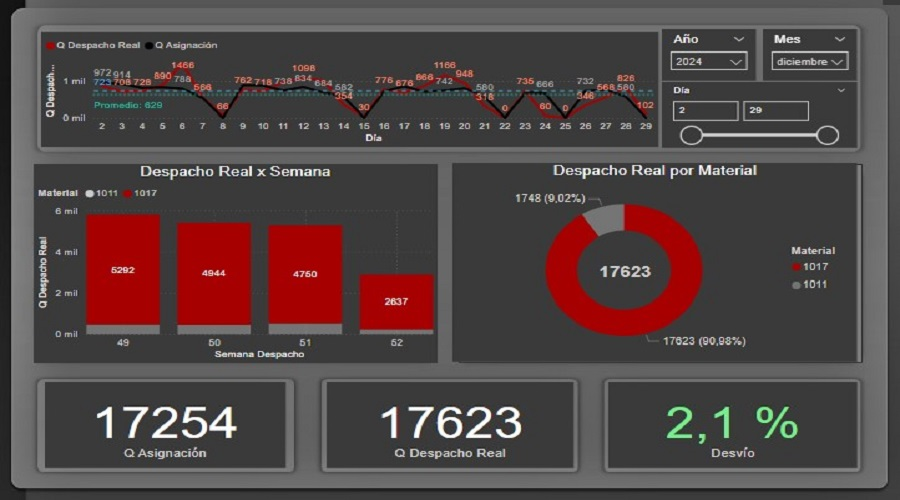
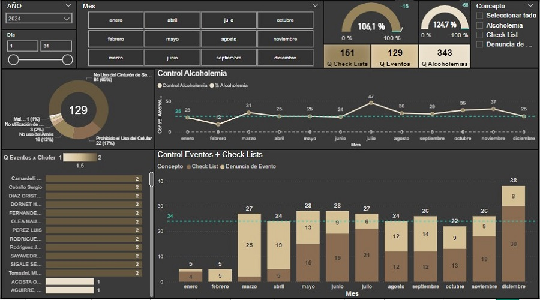
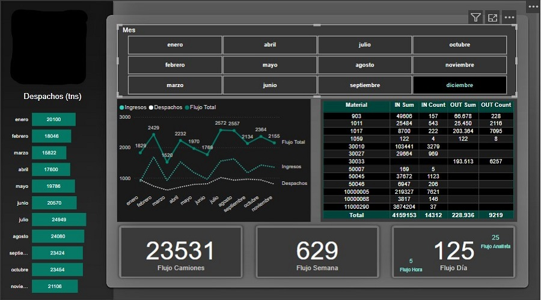
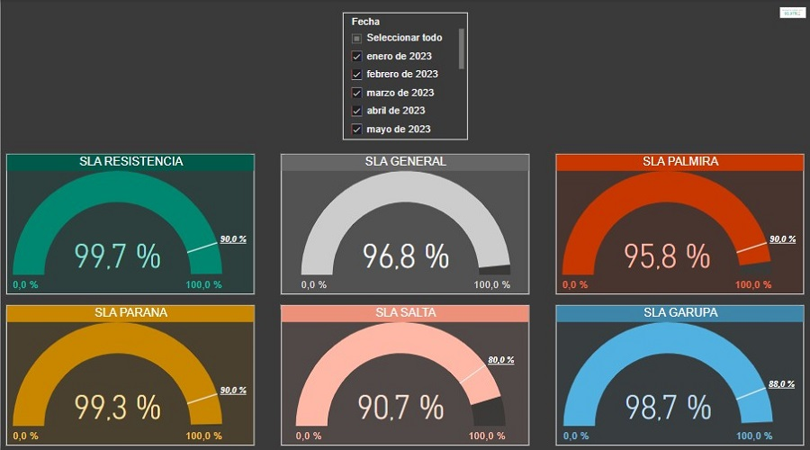
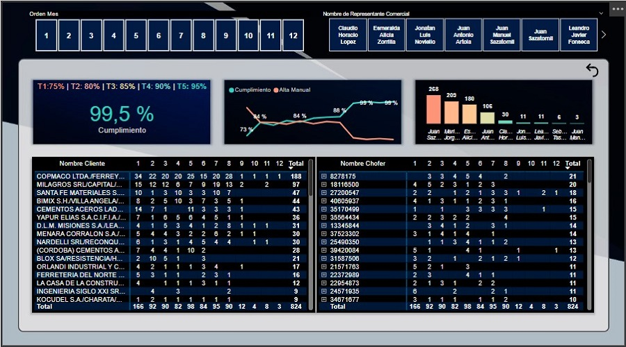
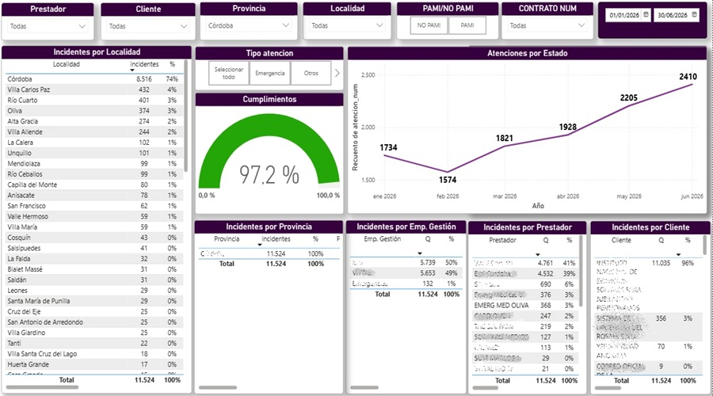
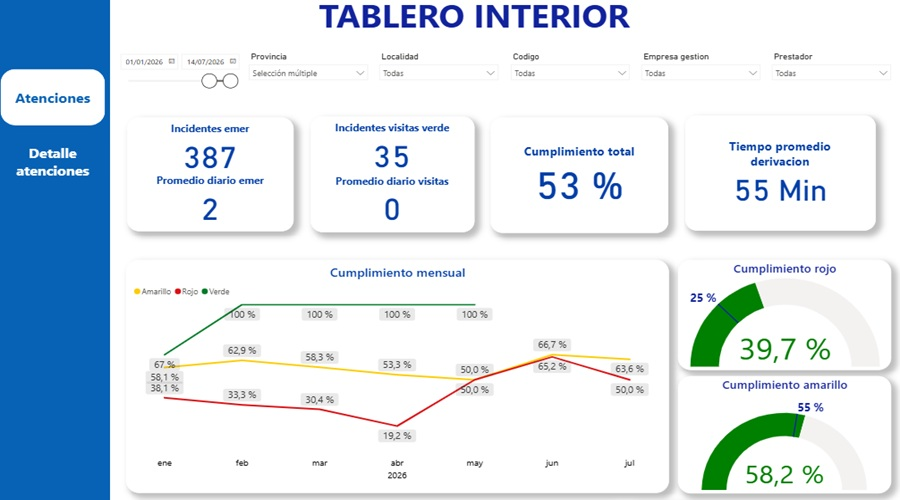
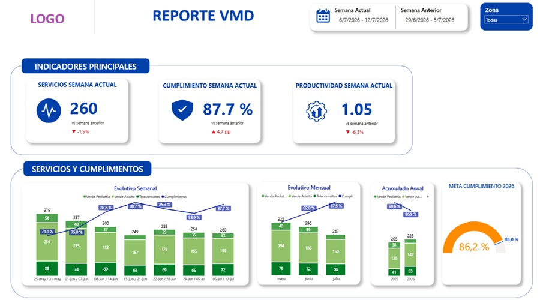

Hola, mi nombre es Cristian Ariel Chavez
Soy Lider de Operaciones
Licenciado en Planificación Logística con una Maestría en Gestión de la Producción y Gerencia de Logística. Además, cuento con múltiples certificaciones en Liderazgo, Comunicación y Análisis de Datos. Destaco por mi capacidad para liderar equipos multidisciplinarios, tomar decisiones basadas en datos, optimizar procesos y asegurar resultados consistentes y de alto impacto.
Descargar CVSobre Mí
Mi nombre es Cristian Ariel Chavez
Soy experto en transformar operaciones complejas en modelos más eficientes, rentables y escalables. Lidero proyectos estratégicos que optimizan costos, mejoran la eficiencia operativa y desarrollan equipos de alto desempeño. Combino visión estratégica, gestión basada en datos y liderazgo para conectar personas, procesos y tecnología, convirtiendo desafíos complejos en resultados sostenibles. Estoy convencido de que la credibilidad se construye a través de los resultados y del crecimiento de las personas que hacen posible alcanzarlos.
Fecha de Nacimiento: 05 dic 1992
Edad: 33 Años
LinkedIn:
Cristian Ariel Chavez
Titulación: Licenciatura y Maestría
Celular: +549 1168083580
Ciudad: Belgrano (CABA)
Disponibilidad: Full Time
Gestión de Operaciones
Liderazgo y Comunicación
Mejora Continua de Procesos
Herramientas y Tecnologías Digitales
Inglés
Experiencia Laboral
Sep 2026 - Actualidad
🚑 Emergencias Salud (Grupo IHSA) | Jefe de Asignación y Respuesta
• Gestión de Capital Humano: Gestiono un equipo compuesto por 9 supervisores y 90 despachadores;
• Gestión de Operaciones: Gestiono una operación 24/7 con un flujo mensual de +80.000 servicios prehospitalarios y traslados sanitarios, con operación propia y tercerizada;
• Gestión de Costos: Desarrollé un modelo de asignación que optimizan decisiones en función de múltiples variables (operativas y económicas), mejorando simultáneamente la cobertura del servicio y la rentabilidad con un potencial de ahorro de ~$50M mensuales;
• Optimización de Procesos: Alerté la necesidad de contar con datos que no estaban disponibles y ejecuté su implementación para detectar y corregir desvíos operativos de forma proactiva;
• Actualmente estoy cumpliendo el 100% de los OKR Propuestos por la Dirección.
Jun 2025 - Ago 2026
🚑 Emergencias Salud (Grupo IHSA) | Jefe de Operaciones del Interior
• Gestión de Capital Humano: Gestiono un equipo compuesto por 1 supervisor, 7 médicos, 4 enfermeros y 1 analista;
• Gestión de Operaciones: Gestiono un flujo mensual de +40.000 servicios prehospitalarios y traslados sanitarios, con operación propia y tercerizada (+150 prestadores);
• Gestión de Costos: Durante el 2026 lidero uno de los proyectos de eficiencias de mayor impacto para la compañía (expectativa de ahorro ~$620M | 70% ya logrado);
• Optimización de Procesos: Creé un tablero de gestión integral en "Power BI", logrando estandarizar la asignación de los servicios y generando +$20M de ahorro menusal gracias a la optimización de los criterios de asignación;
• Actualmente estoy cumpliendo el 100% de los OKR Propuestos por la Dirección.
Feb 2024 - Jun 2025
🏭 Loma Negra C.I.A.S.A. | Coordinador de Logística y Expedición
• Gestión de Capital Humano: Gestiono un equipo compuesto por 5 supervisores y 8 analistas;
• Gestión de Logística: Gestiono un flujo diario de 250 camiones y el abastecimientos a una planta productiva y cinco Depósitos;
• Gestión de Costos: Generé un ahorro del 60% en los Costos Fijos del 2024;
• Gestión de SSMA: Garantizo el cumplimiento de normativas vigentes y acerco proactivamente iniciativas y propuestas de mejora (Lideré una campaña de Seguridad Vial con alcance a todas las expediciones);
• Optimización de Procesos: Creé un tablero de gestión diaria en "Power BI";
• Logré el 100% de los Objetivos Propuestos por la Dirección.
Jun 2023 - Ene 2024
🏭 Loma Negra C.I.A.S.A. | Coordinador de Operaciones Logísticas de Depósito
• Gestión de Capital Humano: Gestioné un equipo compuesto por 5 supervisores y 3 analistas;
• Gestión de Logística: Gestioné el abastecimiento multimodal y el despacho de 5 centros de distribución, alcanzando un SLA superior al 98% e implementando la metodología 5S en cada uno de ellos;
• Gestión de Costos: Generé un ahorro del 20% en los Costos Fijos del 2023;
• Gestión de SSMA: Garanticé el cumplimiento de normativas vigentes y acerqué proactivamente iniciativas y propuestas de mejora;
• Optimización de Procesos: Creé un tablero de gestión diaria en "Power BI";
• Logré el 100% de los Objetivos Propuestos por la Dirección.
Ene 2021 - Jun 2023
📍 Grupo Logístico Andreani | Coordinador de Logística y Calidad Operativa
Negocio HOP Envíos
• Gestión de Capital Humano: Gestioné un equipo conformado por 2 analistas, uno enfocado en la primera milla y otro en la última milla;
• Gestión de Logística: Coordiné actividades diarias entre eCommerce y el operador logístico, asegurando un SLA de +98,5%, corrigiendo desvíos y optimizando rutas (1.000.000 de paquetes mensuales);
• Gestión de Calidad: Creé el área de "Calidad Operativa", definiendo los KPI's y diseñando las métricas para su implementación;
• Optimización de Procesos: Creé un tablero de gestión diaria en "Tableau";
• Logré el 100% de los Objetivos Propuestos por la Gerencia.
Oct 2019 - Dic 2020
📰 S. A. La Nación | Coordinador de Logística y Operaciones
• Gestión de Capital Humano: Gestioné un equipo compuesto por 2 encargados y un total de 20 operarios sindicalizados;
• Gestión de Logística: Supervisé todo el flujo de la mercadería en el centro de distribución, desde la validación documental hasta su despacho, optimizando tiempos y recursos para cumplir con plazos y estándares operativos;
• Gestión de Stocks: Supervisé niveles de stock óptimos, definí stocks de seguridad y evité quiebres de stock. Maximicé el uso del espacio en depósitos mediante procedimientos de control y rotación eficiente;
• Gestión de Calidad: Generé reportes y dashboards utilizando herramientas avanzadas para facilitar la toma de decisiones;
• Gestión de Relaciones Laborales: Negocié asertivamente con delegados sindicales para resolver eficazmente temas relacionados con la logística y las operaciones, en un entorno con presión sindical y servicios tercerizados;
• Logré el 100% de los objetivos propuestos por la Dirección.
Jun 2018 - Sep 2019
📰 S. A. La Nación | Coordinador de Logística
• Gestión Integral de la Logística: Coordiné integralmente la logística de las colecciones, abarcando importaciones, logística local y exportaciones, asegurando eficiencia operativa;
• Gestión de Procesos Adicionales: Planifiqué y ejecuté procesos como el pegado de etiquetas, embolsados e insertados, garantizando estándares de calidad y el cumplimiento de objetivos establecidos;
• Gestión de Objetivos: Preparé informes y reportes ad hoc para evaluar y optimizar los procesos logísticos, contribuyendo al logro del 100% de los objetivos propuestos por la Gerencia.
Jul 2016 - Jun 2018
🏗️ Sullair Argentina S.A. | Administrativo de Logística
• Elaboré reportes e indicadores que optimizaron las operaciones logísticas;
• Administré integralmente las Altas, Bajas y Modificaciones de rastreadores satelitales y tarjetas de YPF en Ruta, supervisando una flota de más de 2.000 unidades;
• Me encargué de la contratación de bienes y servicios para el sector, y de las certificaciones de entregas;
• Fui responsable del seguimiento y actualización de la documentación de la flota propia, alineado a la normativa vigente;
• Elaboré informes de entrega de equipos en alquiler y coordiné recargas de Gas-Oil en origen y destino según necesidades operativas.
Feb 2014 - Jul 2016
🚛 Plastyvial S.R.L. | Administrativo Técnico de Taller
• Elaboré presupuestos para reparaciones de flota pesada, cubriendo áreas mecánicas, eléctricas, de pintura y más, asegurando la precisión y la optimización de costos;
• Gestioné más de 30 órdenes de trabajo diarias y la facturación de los servicios "Fuera de Abono";
• Controlé y seguí los trabajos planificados, asegurando el cumplimiento de plazos y estándares de calidad establecidos;
• Fui el nexo entre pañol y equipos técnicos, garantizando transparencia en el consumo de insumos tanto productivos como improductivos.
Ene 2011 - Ene 2014
📞 Grupo AyC S.R.L. | Team Leader
• 1er Año: Venta telefónica de líneas, módems, portabilidad numérica y equipos celulares para la compañía AMX (Claro Argentina).
• 2do Año: Administrativo (Validación de Ventas y Ruteo de Viajes).
• 3er Año: Team Leader (12 personas a cargo).
Formación Académica
A mi Licenciatura en Planificación Logística y mi Maestría en Gestión de la Producción y Gerencia de Logística ya finalizadas, se les suma una Maestría en Dirección Logística y Supply Chain Management que actualmente estoy cursando y, además, numerosas certificaciones en: Logística, Liderazgo, Comunicación, Coaching, Programación, Herramientas Digitales y Análisis de Datos.
Dirección Logística
y Supply Chain
Carrera de Posgrado (Maestría)
ENEB | Escuela de Negocios
Europea de Barcelona.
Estado: En Curso
Fecha de Finalización: Octubre 2027
Gestión de la Producción
y Gerencia de Logística
Carrera de Posgrado (Maestría)
Instituto Internacional de Estudios
Globales para el Desarrollo Humano.
Nota Final de la Cursada: 19 sobre 20
Trabajo Final de Grado: "Excelente"
Planificación
Logística
Carrera de Grado (Licenciatura)
Universidad Nacional de Lanús
(Buenos Aires, Argentina).
Nota Final de la Cursada: 7,5 sobre 10
Trabajo Final de Grado: 10 (Diez)
Certificaciones en
Liderazgo y Gestión
Creando Grupos de Alto Rendimiento
Liderando con Herramientas Ágiles
Conduciendo la Estrategia Digital
Liderazgo y Gestión de Equipos
Comunicación Efectiva
Coaching Ontológico
Certificaciones en
Logística y Operaciones
Modelos Logísticos para eCommerce
Comercio Exterior e Internacional
Fundamentos de Lean Six Sigma
Tablero de Control Logístico
Logística del Futuro
Gestión del Tiempo
Certificaciones en
Tecnologías Digitales
Diplomatura: BI, Big Data y Analytics
Business Intelligence (SQL y Tableau)
Front End Developer
Programa "+Digital"
Data Analytics
JavaScript
Tableros de Gestión
He desarrollado tableros de Gestión de Personal, Recepción de Materiales, Despachos, Costos, Nivel de Servicio, Operaciones y Productividad que incluyen tendencias, proyecciones y alertas (preventivas, correctivas y predictivas). Garantizando la optimización de los recursos, del tiempo y obteniendo resultados de alto impacto.








